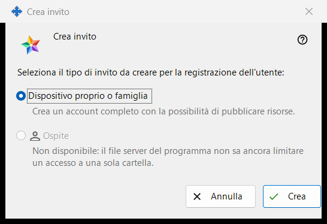
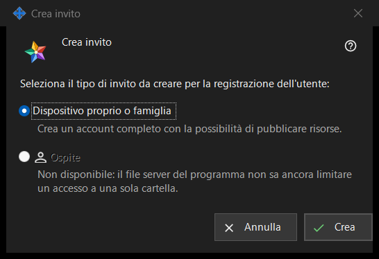

Crea invito
Scopo
Questa piccola finestra chiede quale tipo di account creerà il nuovo invito. Si apre con «Crea invito..» nel gruppo «Inviti» delle impostazioni del server di scambio; il gruppo compare quando il manager raggiunge il server.


In questo ordine
- Nelle impostazioni del server di scambio trova il gruppo «Inviti» e premi «Crea invito..».
- Lascia selezionato «Dispositivo proprio o famiglia».
- Premi «Crea».
- Si apre la finestra «Invito creato» e mostra il codice una sola volta: copialo lì. «Annulla» o Esc chiude la finestra senza creare nulla.
Gli elementi
Tipo di invito
La domanda «Seleziona il tipo di invito da creare per la registrazione dell'utente:» offre due pulsanti di opzione. «Dispositivo proprio o famiglia» è selezionato per impostazione predefinita, e la riga sotto dice «Crea un account completo con la possibilità di pubblicare risorse.» Chi usa l'invito registra un login e una password propri.
Crea
«Crea» chiede al server un invito monouso. In caso di successo, nella pagina delle impostazioni compare la riga «Invito creato con successo.» e si apre la finestra con il codice. Se il server rifiuta, il motivo compare nella pagina e la finestra del codice non si apre. L'elenco mostra ogni invito con tipo, ora di creazione, stato e un hash, mai con il suo codice.
Revocare un invito
Per annullare un invito già creato, selezionalo nell'elenco e premi «Revoca invito». Dopo la tua conferma il suo codice smette di funzionare.
Annulla
«Annulla» o Esc chiude la finestra e non crea nulla.
Impostazioni del gestore · Impostazioni condivisione SFTP · Impostazioni server di scambio